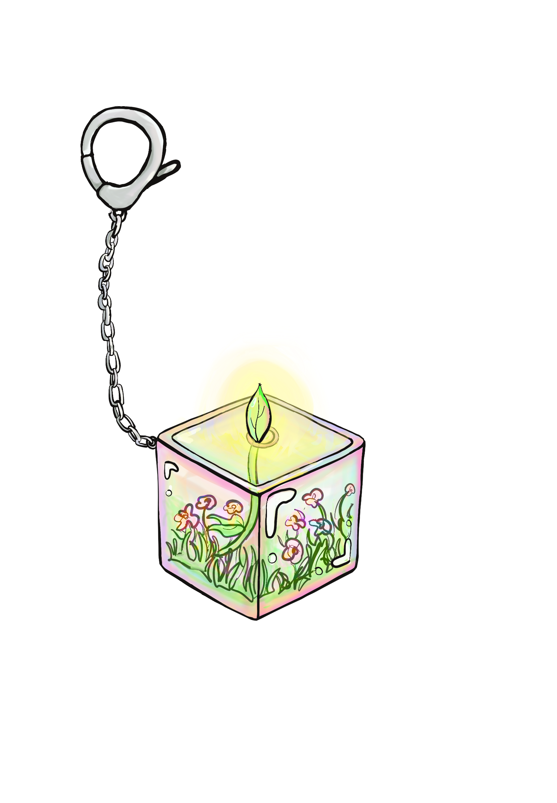
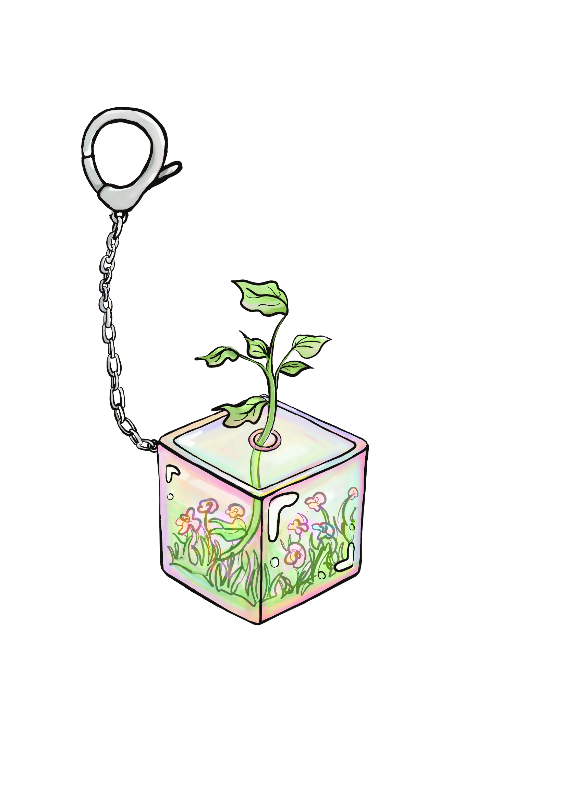

What Is Vinetality?
Vinetality is a small, portable keychain interface that provides tangible feedback to support productivity, well-being, and community building.
Problem Statement: Students and young professionals working independently in mobile environments often struggle to balance productivity, stress, and a sense of community. Existing apps and tools provide limited emotional engagement and fail to offer meaningful feedback or connection.
Innovation: A physical, shape-changing representation of measured well-being + creative community building.
Concept Sketches
Initial design concepts illustrating the intended keychain design with an iridescent translucent cube and a vine growing out from the center.

Closed State - Plant in dormant form within the iridescent cube

Grown State - Plant flourishing with full foliage extending from the cube
Project Documentation
Explore the complete project documentation including process insights, user research, and technical implementation details.
Vinetality Research Documentation
Comprehensive project site featuring detailed process documentation, user flow, and technical implementation insights.
Key Features
-
Shape-Changing Feedback
Physical plant-like interface that responds to user behavior, growing when engaging in productive activities and wilting with neglect.
-
Portable Design
Compact keychain form factor with custom 3D-printed enclosure designed for everyday portability and durability.
-
Smart Integration
Bluetooth connectivity with smartphone integration and mobile app for habit tracking and device configuration.
-
Community Building
Social features that connect users and create accountability networks for productivity and well-being goals.
Technical Approach
The design combines emotional design principles with advanced tangible interaction technologies to create meaningful behavioral feedback:
Physical Computing
Arduino-based microcontroller with shape-memory alloys and servo motors for transformation.
Motor Mechanics
Precise motor control systems enable smooth, lifelike plant movements that respond to user activity patterns.
Emotional Design
Plant metaphor creates emotional investment and intuitive understanding of personal growth.